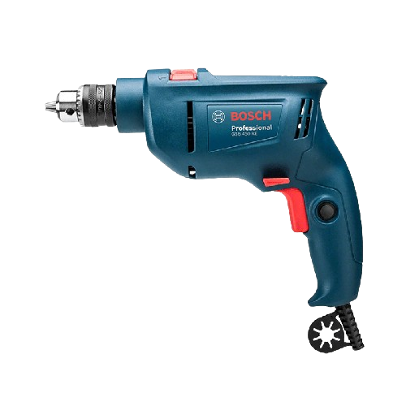
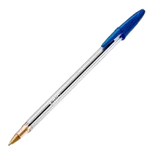
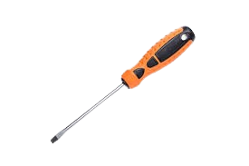

A Fechadura Biométrica Inteligente Wi-Fi da série Multi Casa Conectada é um verdadeiro sistema de segurança para a sua porta. Com campainha nativa e teclado sensível ao toque, este equipamento pode ser ativado por biometria, senha, cartão de proximidade, chave ou ainda através de aplicativo gratuito Multilaser Liv,. através do qual é facilmente configurado e gerenciado. Com design elegante e sofisticado, tem capacidade para até 100 usuários cadastrados, oferecendo a solução de segurança ideal para residência ou ambiente controlado mais moderno e conectado.
Furadeira
Caneta
Chave de fenda
